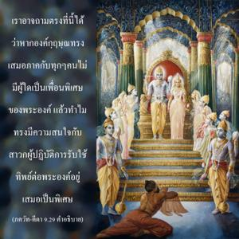

ข้าไม่อิจฉาผู้ใดและไม่ลำเอียงกับผู้ใด ข้าเสมอภาคต่อมวลชีวิต แต่หากผู้ใดถวายการรับใช้แด่ข้าด้วยการอุทิศตนเสียสละ เขาเป็นเพื่อนของข้าและอยู่ในข้า และข้าก็เป็นเพื่อนของเขา

เราอาจถามตรงที่นี้ได้ว่าหากองค์กฺฤษฺณทรงเสมอภาคกับทุกๆคนไม่มีผู้ใดเป็นเพื่อนพิเศษของพระองค์ แล้วทำไมทรงมีความสนใจกับสาวกผู้ปฏิบัติการรับใช้ทิพย์ต่อพระองค์อยู่เสมอเป็นพิเศษ เช่นนี้มิใช่เป็นการเลือกปฏิบัติแต่เป็นธรรมชาติ บางคนในโลกวัตถุนี้อาจชอบให้ทานมากถึงกระนั้นเขาก็ยังให้ความสนใจกับบุตรธิดาของตนเองเป็นพิเศษ องค์ภควานฺทรงอ้างว่าทุกชีวิตไม่ว่าในรูปใดเป็นบุตรของพระองค์ ดังนั้นทรงให้สิ่งของที่จำเป็นอย่างเพียงพอสำหรับทุกๆชีวิต พระองค์ทรงเหมือนกับหมู่เมฆที่ส่งฝนลงมาทั่วทุกหนทุกแห่งไม่ว่าจะตกลงบนหิน บนดิน หรือในน้ำ แต่สำหรับสาวกพระองค์ทรงมีความสนพระทัยโดยเฉพาะ ได้กล่าว ณ ที่นี้ว่าสาวกเหล่านี้อยู่ในกฺฤษฺณจิตสำนึกเสมอจึงสถิตอยู่ในความเป็นทิพย์กับองค์กฺฤษฺณตลอดเวลา วลี “กฺฤษฺณจิตสำนึก” นี้แสดงให้เห็นว่าพวกที่อยู่ในจิตสำนึกเช่นนี้เป็นนักทิพย์นิยมที่มีชีวิตสถิตอยู่ในพระองค์ องค์ภควานฺตรัส ณ ที่นี้อย่างชัดเจนว่า มยิ เต “พวกเขาอยู่ในข้า” โดยธรรมชาติพระองค์ทรงอยู่ในพวกเขาเช่นกัน นี่คือการสนองตอบซึ่งกันและกัน เช่นนี้ได้อธิบายคำว่า เย ยถา มำ ปฺรปทฺยนฺเต ตำสฺ ตไถว ภชามฺยฺ อหมฺ “ผู้ใดศิโรราบต่อข้าเท่าไร ข้าจะดูแลเขาตามสัดส่วนนั้นๆ” การสนองตอบซึ่งกันและกันแบบทิพย์นี้มีอยู่เพราะว่าทั้งองค์ภควานฺและสาวกเป็นจิตสำนึก เมื่อเพชรฝังอยู่ในแหวนทองคำจะดูสวยงามมากเพราะทำให้ทั้งทองคำและเพชรเปล่งปลั่งเป็นประกายมากยิ่งขึ้น องค์ภควานฺและสิ่งมีชีวิตมีรัศมีอยู่นิรันดร เมื่อสิ่งมีชีวิตมีแนวโน้มที่จะรับใช้องค์ภควานฺเขาดูเหมือนกับทองคำ และองค์ภควานฺคือเพชร ดังนั้นการรวมกันเช่นนี้ดีมาก สิ่งมีชีวิตในระดับที่บริสุทธิ์เรียกว่า สาวก องค์ภควานฺกลายมาเป็นสาวกของสาวกของพระองค์ หากความสัมพันธ์ในการสนองตอบซึ่งกันและกันไม่มีระหว่างสาวกและองค์ภควานฺก็จะไม่มีปรัชญาของผู้ที่เชื่อในรูปลักษณ์ ในปรัชญาของผู้ไม่เชื่อในรูปลักษณ์ไม่มีการสนองตอบซึ่งกัน และกันระหว่างองค์ภควานฺและสิ่งมีชีวิตแต่ในปรัชญาที่เชื่อในรูปลักษณ์มีการสนองตอบ
ตัวอย่างได้ให้ไว้เสมอว่าองค์ภควานฺทรงเหมือนกับต้นกัลปพฤกษ์ อะไรก็แล้วแต่ที่เราปรารถนาจากต้นกัลปพฤกษ์นี้พระองค์จะทรงจัดส่งให้ ได้อธิบายอย่างชัดเจน ณ ที่นี้ว่าองค์ภควานฺทรงลำเอียงต่อสาวกซึ่งเป็นปรากฏการณ์แห่งพระเมตตาพิเศษที่ทรงมีต่อสาวก การสนองตอบของพระองค์ไม่ควรพิจารณาว่าอยู่ภายใต้กฎแห่งกรรม แต่อยู่ในสถานภาพทิพย์ซึ่งองค์ภควานฺและสาวกปฏิบัติกัน การอุทิศตนเสียสละรับใช้ต่อพระองค์มิใช่เป็นกิจกรรมของโลกวัตถุ แต่เป็นส่วนหนึ่งของโลกทิพย์ที่มีความเป็นอมตะความปลื้มปิติสุขและความรู้โดดเด่น